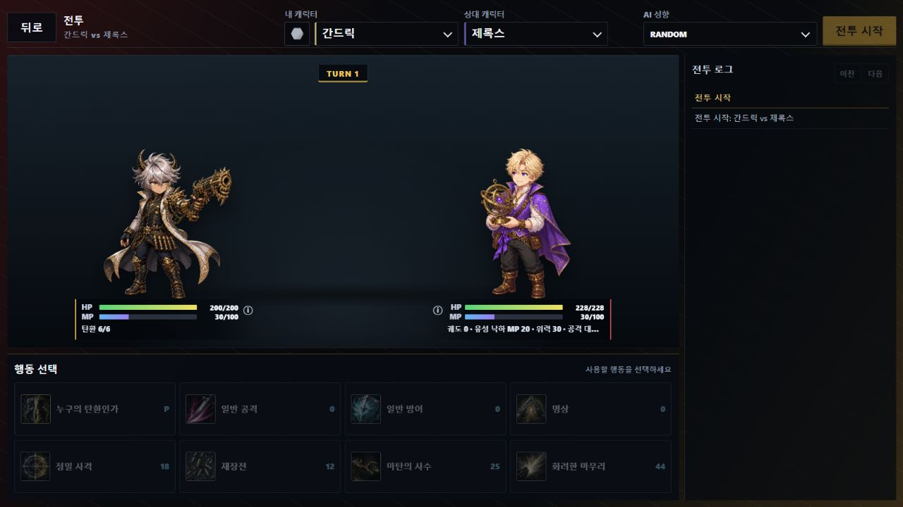

한 턴에 하나의 행동을 고르고,
상대의 HP를 먼저 0으로 만드세요.
VERSUS는 두 캐릭터가 행동을 동시에 선택하는 1대1 턴제 전투 게임입니다. 오로지 상대의 선택을 읽는 판단과 MP 관리... 그리고 약간의 운만이 승패를 가릅니다.
첫 전투 시작하기
처음에는 아래 세 단계만 기억해도 충분합니다.
캐릭터와 각인 선택
상단의 내 캐릭터 선택란과 그 왼쪽 보석 버튼을 사용합니다. 보석 버튼은 전투 전 공통 보정인 각인이며, 처음에는 추가 효과가 없는 Gray로 시작해도 좋습니다.
매 턴 행동 하나 선택
일반 공격·일반 방어·명상 또는 캐릭터 고유 스킬 중 하나를 누릅니다. 양쪽 선택은 동시에 확정됩니다.
상대 HP를 0으로
행동이나 효과를 처리하던 중 HP가 0이 되면 즉시 패배합니다. 남아 있던 행동과 턴 종료 효과도 처리하지 않습니다.
전투 화면 읽기
실제 PvE 화면의 번호와 아래 설명을 함께 확인하세요.

캐릭터 선택
상단의 내 캐릭터에서 사용할 캐릭터를 고릅니다. PvE에서는 오른쪽에서 상대 캐릭터와 AI 성향도 정하며, ???는 무작위 선택입니다.
각인 선택
내 캐릭터 왼쪽의 보석 버튼입니다. 각인은 캐릭터 스킬과 별개로 전투 전에 하나 고르는 공통 보정입니다. 처음이라면 효과가 없는 Gray가 가장 단순합니다.
상대 상태
상대의 HP·MP·능력치와 공개된 고유 상태를 확인합니다. 상대 정보를 누르면 스킬 설명도 볼 수 있습니다.
내 상태
내 남은 자원과 버프·디버프를 확인합니다. 스킬을 누르기 전에 MP가 충분한지 먼저 살펴보세요.
전장과 턴
현재 턴과 양쪽 캐릭터가 표시됩니다. TURN 숫자가 바뀌면 새로운 행동을 선택할 차례입니다.
전투 로그
선공, 명중, 피해, 회복과 효과 발동 결과가 순서대로 기록됩니다. 이전·다음 버튼으로 지난 턴도 확인할 수 있습니다.
행동 선택
패시브와 일곱 행동이 표시됩니다. 파란 숫자는 MP 소모량이며, 버튼에 마우스를 올리거나 정보를 열면 전체 효과를 볼 수 있습니다.
한 턴의 처리 순서
선택 이후에는 게임이 아래 순서대로 자동 판정합니다.
- 행동 선택양쪽이 행동을 하나씩 고르고 동시에 확정합니다.
- 선공 결정우선도가 높은 행동이 먼저 실행됩니다. 우선도가 같다면 SPD가 높은 쪽의 선공 확률이 더 높아집니다.
- 행동 처리MP 소모 → 명중·회피 판정 → 조건 확인 → 피해와 효과 순서로 처리합니다.
- 후공 행동전투가 끝나지 않았다면 두 번째 행동을 처리합니다.
- 턴 종료기본 MP 10 회복과 턴 종료 효과를 처리한 뒤 지속 효과의 남은 턴을 줄입니다.
행동 하나의 내부 처리
스킬 설명의 타이밍 문구는 아래 단계 중 하나를 가리킵니다.
- 행동 개시자신의 차례가 오면 행동을 시작하고
행동 개시 시효과를 처리합니다. 이 단계에서 행동에 실패하면 MP를 소모하지 않고 행동 종료로 넘어갑니다. - MP 소모선택할 때 확정된 MP를 지불합니다. 선택 당시 MP가 부족한 행동은 고를 수 없으며, 이후 이 시점에 MP가 부족해졌다면 소모하지 않고 실패합니다.
- 명중·회피스킬 명중률을 먼저 판정하고, 통과하면 상대의 회피를 판정합니다. 명중률이 `-`인 행동은 이 단계를 건너뜁니다.
- 조건 검토
조건 검토 시효과와 실패 조건을 확인하고 위력·피해 배율 같은 수치를 확정합니다. 여기서 실패해도 이미 쓴 MP는 돌아오지 않습니다. - 피해 계산공격 행동이라면 위력, ATK, DEF, 피해 증감과 [방어]를 반영해 최종 공격 피해를 계산합니다.
- 명중과 일반 효과공격은 피해를 먼저 입힌 뒤
명중 시효과를 처리합니다. 공격이 아닌 행동은 설명에 적힌 일반 효과를 위에서부터 처리합니다. - 성공행동이 정상 처리되었다면
성공 시효과를 적용합니다. 빗나가거나 회피된 공격은 성공으로 보지 않습니다. - 행동 종료행동을 시작했다면 성공·실패·명중 여부와 관계없이
행동 종료 시효과를 확인합니다.
효과 문구와 타이밍 읽기
같은 효과라도 어떤 타이밍에 적혀 있는지에 따라 발동 여부가 달라집니다.
첫 턴을 고르기 전에 한 번 처리합니다. 시작 MP, 각인 공개와 전투 전체에 적용되는 효과가 주로 여기에 해당합니다.
행동 버튼을 고르는 순간 처리합니다. 그 턴의 MP 소모량과 우선도도 이때 확정되며, 이후 실패·빗나감·회피가 발생해도 선택 기록은 남습니다.
선공·후공이 정해진 뒤 실제로 자신의 행동 차례가 왔을 때 처리합니다. MP 소모보다 앞입니다.
행동 선택 시 확정된 값만큼 MP를 지불하는 시점입니다. 현재 MP가 부족하면 소모하지 않고 행동에 실패합니다.
스킬 자체의 명중률을 판정한 뒤 상대의 회피를 판정하는 시점입니다. 둘 다 통과해야 조건 검토로 넘어갑니다.
명중·회피 판정을 통과한 뒤 피해를 계산하기 전에 조건을 확인합니다. 위력이나 피해 배율 변경도 여기서 반영합니다.
공격 피해를 정하는 동안 적용합니다. 실제 HP가 감소하는 `명중` 단계보다 앞입니다.
공격 피해가 적용된 뒤 발동합니다. 빗나가거나 회피되면 발동하지 않습니다.
행동이 끝까지 정상 처리되었을 때 발동합니다. 회복량이 0이어도 실패하지 않았다면 성공이며, 빗나가거나 회피된 공격은 성공이 아닙니다.
행동을 개시했다면 성공 여부와 관계없이 마지막에 확인합니다. 빗나간 행동도 이 시점은 거칩니다.
양쪽 행동이 끝난 뒤 기본 MP 회복, 각인 효과, 그 밖의 턴 종료 효과 순으로 처리하고 지속 턴을 감소시킵니다.
공격이 명중해 피해를 준 뒤 DEF 감소를 적용합니다. 공격이 빗나가거나 상대가 회피하면 적용하지 않습니다.
스킬 MP를 먼저 소모한 뒤 현재 MP가 0인지 확인합니다. 조건을 만족하면 증가한 위력으로 피해를 계산합니다.
스킬 수치 읽는 법
모든 행동은 같은 형식으로 표시됩니다.
상대 / MP 24 / 위력 20 / 명중률 90 / 우선도 0
스킬 사용 자원입니다. 전투 시작 시 30, 기본 최대치는 100이며 턴 종료마다 10을 회복합니다.
공격의 기본 세기입니다. 실제 피해는 공격자의 ATK와 방어자의 DEF 및 여러 효과를 함께 계산합니다.
먼저 스킬 명중을 판정하고, 통과하면 상대의 회피를 판정합니다. 빗나가도 이미 쓴 MP는 돌아오지 않습니다.
숫자가 높은 행동이 반드시 먼저 실행됩니다. 같은 경우에만 SPD를 이용해 선공 확률을 계산합니다.
모든 캐릭터의 공통 행동
MP가 없을 때도 사용할 수 있는 기본 선택지입니다.
일반 공격
MP 0 · 위력 10 · 명중률 100 · 우선도 0. 안정적으로 피해를 주는 가장 단순한 공격입니다.
일반 방어
우선도 3으로 빠르게 발동해 그 턴의 공격 피해를 줄입니다. 연속 사용 시 경감률이 50% → 40% → 30% 순으로 약해집니다.
명상
즉시 MP 15를 회복합니다. 턴 종료의 기본 MP 10 회복도 별도로 받으므로 다음 턴을 준비하기 좋습니다.
능력치·선공·피해 계산
화면에 표시되는 수치가 실제 판정에 어떻게 사용되는지 설명합니다.
생명력입니다. 처리 도중 0이 되는 즉시 패배하며 최대치를 넘겨 회복할 수 없습니다.
액티브 스킬 자원입니다. 기본 최대 100, 시작 시 30이며 턴 종료마다 기본 10을 회복합니다.
공격자가 주는 공격 피해 계산에 사용합니다. 높을수록 같은 위력의 피해가 커집니다.
방어자가 받는 공격 피해 계산에 사용합니다. 높을수록 같은 공격의 피해가 작아집니다.
양쪽 행동의 우선도가 같을 때만 선공 확률을 정합니다. 높아도 선공을 보장하지는 않습니다.
우선도가 다르면 이 계산을 하지 않고 우선도가 높은 행동이 반드시 먼저 실행됩니다.
모든 배율을 반영한 뒤 마지막에 소수점 이하를 버립니다. 명중하고 조건에 실패하지 않은 공격 피해는 최소 1입니다.
위력이 있는 행동입니다. 명중 판정과 피해 공식을 사용합니다. 위력이 -라면 상대에게 고정 피해를 주더라도 비공격 행동입니다.
ATK·DEF와 공격 피해 공식을 사용하지 않으며 [방어]로 줄어들지 않습니다. 중첩당 X는 합계를 한 번 입히며, N회라고 적힌 경우만 별도 피해로 처리합니다.
HP·MP·위력·중첩·고정 피해 같은 정수 수치는 별도 명시가 없으면 소수점 이하를 버립니다. 능력치 배율은 계산 중 유지합니다.
HP와 MP는 최대치를 넘겨 회복할 수 없습니다. 실제 회복량이 0이어도 행동 자체가 실패하지 않았다면 성공으로 처리합니다.
능력치 변화·고유 상태·지속시간
여러 버프와 디버프가 동시에 걸렸을 때의 공통 처리입니다.
서로 다른 효과는 곱연산
ATK 1.2배와 다른 ATK 1.2배가 함께 적용되면 1.4배가 아니라 1.44배가 됩니다. 증가와 감소도 각각 곱합니다.
같은 스킬은 갱신
동일한 스킬로 생긴 능력치 변화는 중첩하지 않습니다. 다시 적용하면 기존 배율과 지속시간을 새 효과로 갱신합니다.
고유 상태와 중첩
상태의 주어와 보유자는 그 상태에 걸린 캐릭터입니다. 최대 중첩이 적혀 있지 않으면 공통 상한은 없습니다.
지속 상태를 다시 부여하면 지속시간을 갱신합니다. 중첩형은 중첩 수도 더하며, 더 짧은 지속시간만 들어온 경우에는 기존 시간을 줄이지 않습니다.
별도 시점이 없으면 조건 검토 시 값을 사용합니다. MP 소모량·우선도는 선택 시, ATK·DEF와 피해 배율은 피해 계산 시 확정합니다.
이 행동 전부터해당 행동을 개시하기 직전의 상태·중첩·기록만 봅니다. 그 행동을 처리하면서 새로 생긴 값은 조건에 포함하지 않습니다.
그 턴에 새로 생긴 효과도 턴 종료 처리가 모두 끝난 뒤 남은 턴이 1 감소하며, 0이 되면 제거됩니다.
턴 종료 처리 순서
양쪽 행동이 끝나고 전투가 계속될 때 아래 순서로 처리합니다.
- 기본 MP 회복양쪽이 각자 변경된 기본 MP 회복량만큼 MP를 회복합니다.
- 각인 효과
턴 종료 시라고 적힌 각인 효과를 처리합니다. - 그 밖의 효과턴 종료 효과를 각 캐릭터에게 적용된 순서대로 처리합니다.
- 지속 턴 감소모든 종료 효과가 끝난 뒤 새로 생긴 효과를 포함해 남은 턴을 1 줄입니다.
- 만료 효과 제거남은 턴이 0이 된 효과를 제거합니다. 도중 HP가 0이면 즉시 전투를 끝냅니다.
각인 전체 효과
각인은 전투 시작 전에 하나 고르는 공통 보정입니다. 양쪽의 실제 각인은 전투 시작 로그에 공개됩니다.
| 각인 | 효과 |
|---|---|
| Gray | 효과 없음 |
| White | 액티브 공격기 위력 2 감소([연격]은 1 감소) / 일반 공격 피해 +1 / 일반 방어 경감 +1 / 명상 MP +1 |
| Red | 액티브 공격기 MP 3 증가 / 위력 3 증가([연격]은 1 증가) |
| Orange | 명중률 10 증가(최대 100) / ATK 0.9배 |
| Yellow | HP 30% 이상일 때 SPD 0.7배 / 30% 미만일 때 SPD 1.7배 및 회피율 10% |
| Green | 턴 종료 시 HP 2 회복 / 기본 MP 회복량 4 감소 |
| Blue | 시작 MP 10 증가 / 기본 MP 회복량 1 증가 / DEF 0.9배 |
| Indigo | 직전 턴과 같은 행동 선택 시 자신의 소모 MP +2 / 상대의 소모 MP +5(첫 턴 제외) |
| Violet | ATK와 DEF 1.1배 / 명중률 5 감소 |
| Random | 전투 시작 시 위 각인 중 하나로 무작위 확정 |
공통 키워드와 효과 처리
캐릭터 설명에 대괄호나 피해 조건이 나오면 아래 공통 의미를 사용합니다.
피해를 입을 때마다공격 피해 또는 고정 피해 한 번으로 실제 HP가 감소한 직후마다 발동합니다.
공격 피해를 입을 때마다공격 피해에만 발동하며 고정 피해는 포함하지 않습니다. 여러 피해를 합쳐 한 번 입히면 한 번의 피해로 봅니다.
설명 순서대로 처리하며 피해 반응은 피해 직후 발동합니다. 행동자와 대상이 함께 발동하면 행동자부터, 같은 캐릭터의 여러 효과는 적용된 순서대로 처리합니다.
효과 처리 중 HP가 0이 되면 남은 효과, 후공 행동과 턴 종료 처리를 모두 중단합니다.
[방어]
자신이 이 턴에 입는 공격 피해를 경감하는 행동입니다. 아래 감소율은 모든 [방어] 행동에 공통으로 적용됩니다.
| 연속 사용 | 1회 | 2회 | 3회 | 4회 | 5회 | 6회 이후 |
|---|---|---|---|---|---|---|
| 피해 경감 | 50% | 40% | 30% | 20% | 10% | 0% |
[방어]에 성공할 때마다 다음 [방어]의 감소율이 10%p씩 낮아집니다. 실패하지 않은 다른 행동을 하면 다시 50%로 초기화됩니다.